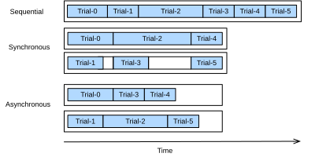

Random Search bất đồng bộ¶
Như đã thấy trong sec_api_hpo, chúng ta có thể phải chờ hàng giờ hoặc thậm chí hàng ngày trước khi random search trả về một cấu hình siêu tham số tốt, do việc đánh giá các cấu hình siêu tham số rất tốn kém. Trong thực tế, chúng ta thường có quyền truy cập vào một nhóm tài nguyên như nhiều GPU trên cùng một máy hoặc nhiều máy, mỗi máy có một GPU. Điều này đặt ra câu hỏi: Làm thế nào để phân tán random search hiệu quả?
Nhìn chung, chúng ta phân biệt giữa tối ưu hóa siêu tham số song song đồng bộ và bất đồng bộ (xem distributed_scheduling). Trong thiết lập đồng bộ, chúng ta chờ tất cả các trial đang chạy đồng thời kết thúc trước khi bắt đầu batch tiếp theo. Xét các không gian cấu hình chứa các siêu tham số như số bộ lọc hoặc số tầng của một mạng nơ-ron sâu. Các cấu hình siêu tham số chứa số lượng tầng hoặc bộ lọc lớn hơn tự nhiên sẽ mất nhiều thời gian hơn để kết thúc, và tất cả các trial khác trong cùng batch sẽ phải chờ tại các điểm đồng bộ hóa (vùng xám trong distributed_scheduling) trước khi ta có thể tiếp tục quá trình tối ưu hóa.
Trong thiết lập bất đồng bộ, chúng ta lập lịch ngay một trial mới khi tài nguyên sẵn sàng. Điều này khai thác tài nguyên tối ưu, vì chúng ta có thể tránh mọi overhead đồng bộ hóa. Với random search, mỗi cấu hình siêu tham số mới được chọn độc lập với tất cả cấu hình khác, và đặc biệt là không khai thác quan sát từ bất kỳ đánh giá trước nào. Điều này có nghĩa là ta có thể song song hóa random search bất đồng bộ một cách tầm thường. Điều này không đơn giản với các phương pháp tinh vi hơn đưa ra quyết định dựa trên các quan sát trước đó (xem sec_sh_async). Dù cần quyền truy cập vào nhiều tài nguyên hơn so với thiết lập tuần tự, random search bất đồng bộ thể hiện tốc độ tăng tuyến tính, theo nghĩa là một mức hiệu năng nhất định đạt được nhanh hơn \(K\) lần nếu \(K\) trial có thể chạy song song.

Trong notebook này, chúng ta sẽ xem xét random search bất đồng bộ, trong đó các trial được thực thi trong nhiều tiến trình Python trên cùng một máy. Lập lịch và thực thi job phân tán rất khó triển khai từ đầu. Chúng ta sẽ dùng Syne Tune [salinas-automl22], cung cấp một giao diện đơn giản cho HPO bất đồng bộ. Syne Tune được thiết kế để chạy với nhiều back-end thực thi khác nhau, và độc giả quan tâm được mời nghiên cứu các API đơn giản của nó để tìm hiểu thêm về HPO phân tán.
from d2l import torch as d2l
import logging
logging.basicConfig(level=logging.INFO)
from syne_tune.config_space import loguniform, randint
from syne_tune.backend.python_backend import PythonBackend
from syne_tune.optimizer.baselines import RandomSearch
from syne_tune import Tuner, StoppingCriterion
from syne_tune.experiments import load_experiment
Hàm mục tiêu¶
Trước tiên, chúng ta phải định nghĩa một hàm mục tiêu mới sao cho giờ đây nó trả
hiệu năng về cho Syne Tune thông qua callback report.
def hpo_objective_lenet_synetune(learning_rate, batch_size, max_epochs):
from d2l import torch as d2l
from syne_tune import Reporter
model = d2l.LeNet(lr=learning_rate, num_classes=10)
trainer = d2l.HPOTrainer(max_epochs=1, num_gpus=1)
data = d2l.FashionMNIST(batch_size=batch_size)
model.apply_init([next(iter(data.get_dataloader(True)))[0]], d2l.init_cnn)
report = Reporter()
for epoch in range(1, max_epochs + 1):
if epoch == 1:
# Initialize the state of Trainer
trainer.fit(model=model, data=data)
else:
trainer.fit_epoch()
validation_error = d2l.numpy(trainer.validation_error().cpu())
report(epoch=epoch, validation_error=float(validation_error))
Lưu ý rằng PythonBackend của Syne Tune yêu cầu các dependency được import
bên trong định nghĩa hàm.
Scheduler bất đồng bộ¶
Trước tiên, chúng ta định nghĩa số worker đánh giá các trial đồng thời. Chúng ta cũng cần chỉ định muốn chạy random search trong bao lâu, bằng cách định nghĩa một giới hạn trên cho tổng thời gian wall-clock.
n_workers = 2 # Needs to be <= the number of available GPUs
max_wallclock_time = 12 * 60 # 12 minutes
Tiếp theo, chúng ta nêu metric nào muốn tối ưu hóa và muốn tối thiểu hóa hay
tối đa hóa metric này. Cụ thể, metric cần tương ứng với tên đối số
được truyền cho callback report.
Chúng ta dùng không gian cấu hình từ ví dụ trước. Trong Syne Tune, dictionary này
cũng có thể được dùng để truyền các thuộc tính hằng cho script huấn luyện.
Chúng ta tận dụng tính năng này để truyền max_epochs. Hơn nữa, chúng ta chỉ định
cấu hình đầu tiên cần đánh giá trong initial_config.
config_space = {
"learning_rate": loguniform(1e-2, 1),
"batch_size": randint(32, 256),
"max_epochs": 10,
}
initial_config = {
"learning_rate": 0.1,
"batch_size": 128,
}
Tiếp theo, chúng ta cần chỉ định back-end để thực thi job. Ở đây chúng ta chỉ xét việc phân tán trên một máy cục bộ, nơi các job song song được thực thi như các tiến trình con. Tuy nhiên, với HPO quy mô lớn, chúng ta cũng có thể chạy trên một cluster hoặc môi trường cloud, nơi mỗi trial tiêu thụ một instance đầy đủ.
trial_backend = PythonBackend(
tune_function=hpo_objective_lenet_synetune,
config_space=config_space,
)
Bây giờ chúng ta có thể tạo scheduler cho random search bất đồng bộ, có hành vi
tương tự BasicScheduler của chúng ta từ sec_api_hpo.
scheduler = RandomSearch(
config_space,
metric=metric,
mode=mode,
points_to_evaluate=[initial_config],
)
Syne Tune cũng có một Tuner, nơi vòng lặp thí nghiệm chính và
bookkeeping được tập trung, và tương tác giữa scheduler và back-end được
trung gian hóa.
stop_criterion = StoppingCriterion(max_wallclock_time=max_wallclock_time)
tuner = Tuner(
trial_backend=trial_backend,
scheduler=scheduler,
stop_criterion=stop_criterion,
n_workers=n_workers,
print_update_interval=int(max_wallclock_time * 0.6),
)
Hãy chạy thí nghiệm HPO phân tán của chúng ta. Theo tiêu chí dừng, nó sẽ chạy khoảng 12 phút.
Log của tất cả các cấu hình siêu tham số đã đánh giá được lưu lại để phân tích thêm. Tại bất kỳ thời điểm nào trong job tuning, chúng ta có thể dễ dàng lấy kết quả thu được đến lúc đó và vẽ quỹ đạo incumbent.
Trực quan hóa quá trình tối ưu hóa bất đồng bộ¶
Bên dưới chúng ta trực quan hóa cách các learning curve của từng trial (mỗi màu trong đồ thị biểu diễn một trial) tiến hóa trong quá trình tối ưu hóa bất đồng bộ. Tại bất kỳ thời điểm nào, có số trial đang chạy đồng thời bằng với số worker. Khi một trial kết thúc, chúng ta ngay lập tức bắt đầu trial tiếp theo, không chờ các trial khác kết thúc. Thời gian nhàn rỗi của worker được giảm đến tối thiểu bằng lập lịch bất đồng bộ.
d2l.set_figsize([6, 2.5])
results = tuning_experiment.results
for trial_id in results.trial_id.unique():
df = results[results["trial_id"] == trial_id]
d2l.plt.plot(
df["st_tuner_time"],
df["validation_error"],
marker="o"
)
d2l.plt.xlabel("wall-clock time")
d2l.plt.ylabel("objective function")
Tóm tắt¶
Chúng ta có thể giảm đáng kể thời gian chờ của random search bằng cách phân tán các trial trên các tài nguyên song song. Nhìn chung, chúng ta phân biệt giữa lập lịch đồng bộ và lập lịch bất đồng bộ. Lập lịch đồng bộ nghĩa là chúng ta lấy mẫu một batch cấu hình siêu tham số mới khi batch trước đó kết thúc. Nếu có straggler, tức các trial mất nhiều thời gian hơn các trial khác, worker của chúng ta phải chờ tại các điểm đồng bộ hóa. Lập lịch bất đồng bộ đánh giá một cấu hình siêu tham số mới ngay khi tài nguyên sẵn sàng, và do đó đảm bảo mọi worker luôn bận tại bất kỳ thời điểm nào. Dù random search dễ phân tán bất đồng bộ và không yêu cầu thay đổi thuật toán thực tế, các phương pháp khác cần thêm một số sửa đổi.
Bài tập¶
- Xét mô hình
DropoutMLPđược triển khai trong sec_dropout, và được dùng trong Bài tập 1 của sec_api_hpo.- Triển khai hàm mục tiêu
hpo_objective_dropoutmlp_synetuneđể dùng với Syne Tune. Đảm bảo hàm của bạn báo cáo lỗi validation sau mỗi epoch. - Dùng thiết lập của Bài tập 1 trong sec_api_hpo, so sánh random search với Bayesian optimization. Nếu dùng SageMaker, bạn có thể dùng các tiện ích benchmark của Syne Tune để chạy thí nghiệm song song. Gợi ý: Bayesian optimization được cung cấp dưới dạng
syne_tune.optimizer.baselines.BayesianOptimization. - Với bài tập này, bạn cần chạy trên một instance có ít nhất 4 CPU core. Với một trong các phương pháp dùng ở trên (random search, Bayesian optimization), chạy thí nghiệm với
n_workers=1,n_workers=2,n_workers=4, rồi so sánh kết quả (quỹ đạo incumbent). Ít nhất với random search, bạn nên quan sát được co giãn tuyến tính theo số worker. Gợi ý: Để có kết quả vững, bạn có thể phải lấy trung bình trên vài lần lặp cho mỗi cấu hình.
- Triển khai hàm mục tiêu
- Nâng cao. Mục tiêu của bài tập này là triển khai một scheduler mới trong Syne Tune.
- Tạo một môi trường ảo chứa cả source d2lbook và syne-tune.
- Triển khai
LocalSearchertừ Bài tập 2 trong sec_api_hpo như một searcher mới trong Syne Tune. Gợi ý: Đọc tutorial này. Hoặc bạn có thể theo ví dụ này. - So sánh
LocalSearchermới của bạn vớiRandomSearchtrên benchmarkDropoutMLP.